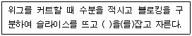

미용사(일반) (2007-07-15 기출문제)
1과목: 미용이론
1. 개체변발의 설명으로 틀린 것은?
- 고려시대에 한동안 일부 계층에서 유행했던 남성의 머리모양이다.
- 남성의 머리카락을 끌어올려 정수리에서 틀아 감아 맨 모양이다.
- 머리 변두리의 머리카락을 삭발하고 정수리 부분만 남기어 땋아 늘어뜨린 형이다.
- 몽고의 풍습에서 전래되었다.
(정답률: 51%)

2. 두발상태가 건조하며 길이로 가늘게 갈라지듯 부서지는 증세는?
- 원형탈모증
- 결발성 탈모증
- 비강성 탈모증
- 결절 염모증
(정답률: 60%)
3. 레이저(Razor))로 테이퍼링(tapering)할 때 스트랜드의 뿌리에서 약 어느 정도 떨어져서 행해야 가장 좋은가?(오류 신고가 접수된 문제입니다. 반드시 정답과 해설을 확인하시기 바랍니다.)
- 약 1Cm
- 약 2Cm
- 약 2.5-5Cm
- 약 5Cm 이상
(정답률: 63%)
4. 털의 움직임(무브먼트)중 컬이 오래 지속되며 움직임이 가장 작은 기본적인 스템은?
- 풀스템
- 하프스템
- 논스템
- 업스템
(정답률: 76%)
5. 퍼머넨트 웨이브의 사용방법에 따른 분류 중 시스테인(CYSTEINE) 퍼머넨트 웨이브제에 관한 설명인 것은?
- 알칼리에서 강한 환원력을 가지고 있어 건강모발에 효과적이다.
- 모발의 아미노산 성분과 동일한 것으로 손상모발에 효과적이다.
- 환원제로 티오글리콜산을 이용하는 퍼머넨트제이다.
- 암모니아수 등의 알칼리제를 사용하는 대신 계면활성제를 첨가한 제제이다.
(정답률: 41%)
6. 아이론을 발명하여 헤어스타일의 대혁명을 일으킨 사람은?
- 독일의 찰스네슬러
- 독일의 조셉 메이어
- 프랑스의 마셀그라또
- 영국의 스피크먼
(정답률: 74%)
7. 다음 글의 ( )안에 들어갈 수 없는 것은?

- 스트랜드
- 패널
- 머릿단
- 스캘프
(정답률: 32%)
8. 다음 중 클럽 커트(Club cut)와 같은 것은?
- 싱글링(Shingling)
- 트리밍(Trimming)
- 클립핑(Clipping)
- 블런트커드(blunt cut)
(정답률: 69%)
9. 두부의 라인 중 이어 포인트에서 네이프사이드 포인트를 연결한 선을 무엇이라 하는가?
- 목뒤선
- 목옆선
- 측두선
- 측중선
(정답률: 57%)
10. 산성린스의 사용에 관한 설명 중 틀린 것은?
- 살균작용이 있으므로 많이 사용하는 것이 좋다.
- 남아있는 퍼머넨트 약액을 제거할 수 있게 한다.
- 금속성 피막을 제거해 준다.
- 비누 샴푸제의 불용성 알칼리 성분을 제거해 준다.
(정답률: 71%)
11. 다음 중 산성린스의 종류가 아닌 것은?
- 레몬린스(lemon rinse)
- 비니거 린스(vinegar rinse)
- 오일 린스(oil rinse)
- 구연산 린스(citric acid rinse)
(정답률: 85%)
12. 얼굴마사지 시 손가락의 바닥면을 사용해서 재빨리 연속해서 가볍게 실시하는 고타법에 해당하는 것은?
- 태핑(tapping)
- 해킹(hacking)
- 슬래핑(slapping)
- 커핑(cupping)
(정답률: 52%)
13. 헤어 컨디셔너제의 기능에 해당하지 않는 것은?
- 두발을 유연하게 해 준다.
- 두발에 윤기와 광택을 준다.
- 두발과 두피의 더러움을 제거한다.
- 두발의 빗질을 용이하게 해준다.
(정답률: 83%)
14. 마셀웨이브에서 안말음(in-curl)형 작업을 행할 때 아이론의 방향을 어느 방향으로 잡고 해야 되는가?
- 그루브는 위쪽, 로드는 아랫방향
- 로드는 위쪽 그루브는 아랫방향
- 어느 방향이든 상관없다
- 그루브(grove)나 로드(rod)를 번갈아 사용한다.
(정답률: 57%)
15. 다음 중 피부에 강한 긴장력을 주어 잔주름을 없애는 데 가장 효과가 있는 팩은?
- 우유팩(milk pack)
- 오일팩(oil pack)
- 계란팩(egg pack)
- 파라핀팩(paraffin pack)
(정답률: 53%)
16. SPF란 무엇을 뜻하는가?
- 자외선의 선탠 지수
- 자외선이 우리 몸에 들어오는 지수
- 자외선이 우리 몸에 머무는 지수
- 자외선 차단 지수
(정답률: 90%)
17. 의조(artificial nail)를 하는 경우로 틀린 것은?
- 손톱이 보기 흉할 때
- 다쳤을 때
- 손톱을 소독할 때
- 떨어져 나갔을 때
(정답률: 73%)
18. 엉킨 두발을 빗으려 할 때 어디에서부터 시작하는 것이 가장 좋은가?
- 두발 끝에서부터
- 두피에서 부터
- 두발 중간에서부터
- 아무데서나 상관없다.
(정답률: 79%)
19. 주근깨가 가장 많은 얼굴의 화장법으로 옳지 않은 것은?
- 밝은 계열의 백분을 두껍게 발라준다.
- 입술과 눈을 강조한다.
- 볼연지는 암색계를 사용한다.
- 밝은 색상의 립스틱으로 시선을 옮겨준다.
(정답률: 61%)
20. 지성 피부, 주름진 피부, 비듬성 피부에 가장 좋은 광선은?
- 가시광선
- 적외선
- 자외선
- 감마선
(정답률: 49%)
2과목: 공중보건학
21. 지역사회의 보건수준을 평가하는 가장대표적인 지표는?
- 일반 사망률
- 영아사망률
- 인구증가율
- 인구당 의사수
(정답률: 90%)
22. 다음 중 공중보건사업에 속하지 않는 것은?
- 강환자 치료
- 예방접종
- 보건교육
- 전염병관리
(정답률: 83%)
23. 감자에 함유되어 있는 독소는?
- 에르고톡신
- 솔라닌
- 무스카린
- 베네루핀
(정답률: 71%)
24. 피임의 이상적 요건 중 틀린 것은?
- 피임효과가 확실하여 더 이상 임신이 되어서는 안 된다.
- 육체적 정신적으로 무해하고 부부생활에 지장을 주어서는 안 된다.
- 비용이 적게 들어야 하고, 구입이 불편해서는 안 된다.
- 실시방법이 간편하여야 하고, 부자연스러우면 안 된다.
(정답률: 68%)
25. 다음중 방사선에 관련된 직업에 의해 발생할 수 있는 것이 아닌 것은?
- 조혈지능장애
- 백혈병
- 생식기능장애
- 잠항병
(정답률: 61%)
26. 다음 중 하수에서 용존산소(DO)가 아주 낮다는 의미에 적합한 것은?
- 수생식물이 잘 자랄 수 있는 물의 환경이다.
- 물고기가 잘 살 수 있는 물의 환경이다.
- 물의 오염도가 높다는 의미이다.
- 하수의 BOD가 낮은 것과 같은 의미이다.
(정답률: 74%)
27. 잉어, 참붕어, 피라미 등의 민물고기를 생식하였을 때 감염될 수 있는 것은?
- 간흡층증
- 구충증
- 유구조충증
- 말레이사상충증
(정답률: 70%)
28. 바퀴벌레에 의해 전파될 수 있는 전염병에 속하지 않는 것은?
- 이질
- 말라리아
- 콜레라
- 장티푸스
(정답률: 47%)
29. 실,내외의 온도차는 몇 도가 가장 적합한가?
- 1-3℃
- 5-7℃
- 8-12℃
- 12℃이상
(정답률: 58%)
30. 다음 중 전염병 관리상 가장 중요하게 취급해야 할 대상자는?
- 건강보균자
- 잠복기환자
- 현성환자
- 회복기보균자
(정답률: 73%)
3과목: 소독학
31. 포르말린 소독법 중 올바른 설명은?
- 온도가 낮을수록 소독력이 강하다.
- 온도가 높을수록 소독력이 강하다.
- 온도가 높고 낮음에 관계없다.
- 포르말린은 가스 상으로는 작용하지 않는다.
(정답률: 70%)
32. 다음 중 소독에 영향을 가장 적게 미치는 인자는?
- 온도
- 대기압
- 수분
- 시간
(정답률: 68%)
33. 다음 중 크레졸의 설명으로 틀린 것은?(오류 신고가 접수된 문제입니다. 반드시 정답과 해설을 확인하시기 바랍니다.)
- 3%의 수용액을 주로 사용한다.
- 석탄산에 비해 2배의 소독력이 있다.
- 손, 오물 등의 소독에 사용된다.
- 물에 잘 녹는다.
(정답률: 40%)
34. 다음 중 세균이 가장 잘 자라는 최적 수소이온(PH) 농도에 해당되는 것은?
- 강산성
- 약산성
- 중성
- 강알칼리성
(정답률: 50%)
35. 초음파살균에 가장 효과적인 미생물은?
- 나선균
- 파상풍균
- 그람양성세균
- 쌍구균
(정답률: 59%)
36. 내열성이 강해서 자비소독으로는 멸균이 되지 않는 것은?
- 장티푸스균
- .결핵균
- 아포형성균
- 쌍구균
(정답률: 50%)
37. 다음 중 열에 대한 저항력이 커서 자비소독으로는 멸균이 되지 않는 것은?
- 장티푸스균
- 결핵균
- 살모넬라균
- B형 간염바이러스
(정답률: 60%)
38. 다음 중 소독방법과 소독대상이 바르게 연결된 것은?
- 화염멸균법-의류나 타올
- 자비소독법-아마인유
- 고압증기멸균법-예리한 칼날
- 건열멸균법-바세린(vaseline) 및 파우더
(정답률: 57%)
39. 살균력은 강하지만 자극성과 부식성이 강해서 상수 또는 하수의 소독에 주로 이용되는 것은?
- 알콜
- 질산은
- 승홍
- 염소
(정답률: 54%)
40. 파스퇴르가 발명한 살균방법은?
- 저온 살균법
- 증기살균법
- 여과 살균법
- 자외선 살균법
(정답률: 54%)
4과목: 피부학
41. 여드름관리에 사용되는 화장풍의 올바른 기능은?
- 피지증가유도효과
- 수렴작용 효과
- 박테리아 증식효과
- 각질의 증가효과
(정답률: 78%)
42. 다음의 피부 구조 중 진피에 속하는 것은?
- 망상층
- 기저층
- 유극층
- 과립층
(정답률: 45%)
43. 피부의 표면에 희로애락의 감정이 민감하게 반영되는 작용은?
- 표정작용
- 지각작용
- 보호작용
- 호흡작용
(정답률: 59%)
44. “블루밍 효과”의 설명으로 가장 적합한 것은?
- 파운데이션의 색소 침착을 방지하는 것
- 보송보송하고 화사하게 피부를 표현하는 것
- 밀착성을 높여 화장의 지속성을 높게 하는 것
- 피부색을 고르게 보이도록 하는 것
(정답률: 63%)
45. 피부질환의 증상에 대한 설명 중 맞는 것은?
- 수족구염 : 홍반성 결절이 하지부 부분에 여러 개 나타나며 손으로 누르면 통증을 느낀다.
- 지루피부염 : 기름기가 있는 인설(비듬)이 특징이며 호전과 악화를 되풀이 하고 약간의 가려움증이 동반한다.
- 무좀 : 홍반에서부터 시작되며 수 시간 후에는 구진이 발생된다.
- 여드름 : 구강 내 병변으로 동그란 홍반에 둘러싸여 작은 수포가 나타난다.
(정답률: 68%)
46. 다음 중 비타민 C를 가장 많이 함유한 식품은?(오류 신고가 접수된 문제입니다. 반드시 정답과 해설을 확인하시기 바랍니다.)
- .레몬
- 당근
- 고추
- 쇠고기
(정답률: 81%)
47. 자각증상으로서 피부를 긁거나 문지르고 싶은 충동에 의한 가려움증은?
- 소양감
- 작열감
- 측감
- 의주감
(정답률: 57%)
48. 콜라겐과 엘라스틴이 주성분으로 이루어진 피부조직은?
- 표피상층
- 표피하층
- 진피조직
- 피하조직
(정답률: 52%)
49. 피부상태를 측정 분석하는 기구로 그 양상이 색깔로 나타타는 피부미용기기는?
- 스팀기
- 석션기(진공흡입기)
- 우드램프
- 확대경
(정답률: 73%)
50. 다음 중 수용성 비타민은?
- 비타민B복합체
- 비타민A
- 비타민D
- 비타민K
(정답률: 44%)
5과목: 공중위생법규
51. 이용사 또는 미용사의 업무 등에 대한 설명 중 맞는 것은?
- 이용사 또는 미용사의 업무범위는 보건복지부령으로 정하고 있다.
- 이용 또는 미용의 업무는 영업소 이외 장소에서도 보편적으로 행할 수 있다.
- 미용사의 업무법위는 파마, 아이론, 면도, 머리피부 손질, 피부미용 등이 포함된다.
- 이용사 또는 미용사의 면허를 받은 자가 아닌 경우, 일정기간의 수련과정을 마쳐야만 이용 또는 미용업무에 종사할 수 있다.
(정답률: 48%)
52. 변경신고를 하지 아니하고 이.미용영업소의 소재지를 변경한 때의 1차 위반 행정처분기준은?(관련 규정 개정전 문제로 여기서는 기존 정답인 4번을 누르면 정답 처리됩니다. 자세한 내용은 해설을 참고하세요.)
- 개선명령
- 경고
- 영업정지 2월
- 영업장 폐쇄명령
(정답률: 45%)
53. 공중위생관리법에서 공중위생영업이란 다수인을 대상으로 무엇을 제공하는 영업으로 정의되고 있는가?
- 위생관리서비스
- 위생서비스
- 위생안전서비스
- 공중위생서비스
(정답률: 29%)
54. 다음 중 이.미용사 면허를 받을 수 있는 자가 아닌 것은?
- 고등학교에서 이용 또는 미용에 관한 학과를 졸업한 자
- 국가기술자격법에 의한 이용사 또는 미용사 자격을 취득한자
- 보건복지부 장관이 인정하는 외국의 이용사 또는 미용사 자격 소지자
- 전문대학에서 이용 또는 미용에 관한 학과 졸업자
(정답률: 57%)
55. 공중위생관리법상의 위생교육에 대한 설명 중 옳은 것은?
- 위생교육 대상자는 이.미용영업자이다.
- 위생교육 대상자는 이.미용사이다.
- 위생교육 시간은 매년 8시간이다.
- 위생교육은 공중위생관리법 위반자에 한하여 받는다.
(정답률: 76%)
56. 공중위생관리법에서 규정하고 있는 공중위생영업의 종류에 해당되지 않는 것은?
- 이용업
- 위생관리용역업
- 학원영업
- 세탁업
(정답률: 80%)
57. 영업소 안에 출입, 검사 등의 기록부를 비치하지 아니한 때의 1차 위반 행정처분 기준은?
- 경고
- 영업정지5일
- 영업정지10일
- 영업정지15일
(정답률: 80%)
58. 공중위생관리법규에서 규정하고 있는 이, 미용영업자의 준수사항이 아닌 것?
- 소독을 한 기구와 소독을 하지 아니한 기구는 각각 다른 용기에 넣어 보관하여야 한다.
- 손님의 피부에 닿는 수건은 악취가 나지 않아야 한다.
- 이,미용 요금표를 업소 내에 게시하여야 한다.
- 이.미용업 신고중 개설자의 면허증 원본 등은 업소 내에 게시하여야 한다.
(정답률: 55%)
59. 영업소 폐쇄명령을 받은 후 동일한 장소에서 폐쇄명령을 받은 영업과 같은 종류의 영업을 하고자 할 때 얼마의 기간이 지나야 가능한가?
- 3월
- 6월
- 1년
- 2년
(정답률: 69%)
60. 이.미용사의 면허가 취소되었을 경우 몇 개월이 경과되어야 또 다시 그 면허를 받을 수 있는가?
- 3개월
- 6개월
- 9개월
- 12개월
(정답률: 49%)